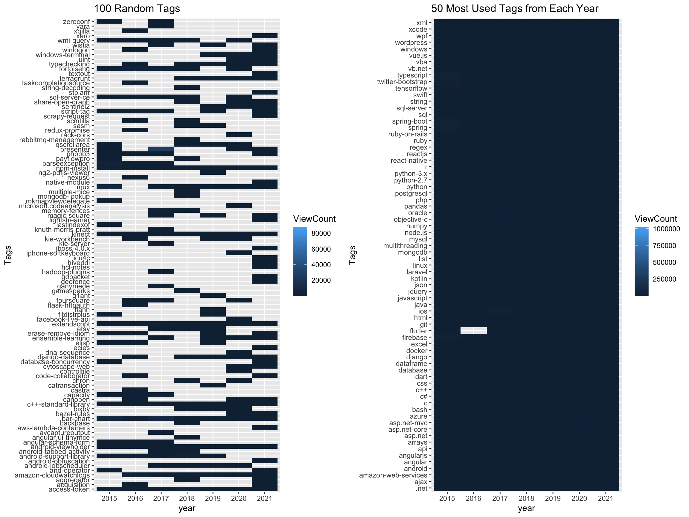

Chapter 4 Missing values
Since our query did not include values without tags, the only missing values in our dataset are the missing values in AcceptedAnswerId as a result of the question not being answered. This problem is solved by the introduction of the indicator variable AcceptAnswer. Each post can only have one accepted answer so if we wish to determine if any other variables have an impact on the probability that a post will have an accepted answer we can use the proportion of posts that have answered posts to find our results.
That being said, not every tag we have listed in each year will appear in all the other years. Sampling random tags from our dataset proves unhelpful due to relatively low frequency of use of many of the tags within our sample.
Since we are not interested in all 29085 unique tags, it will suffice to analyze the top 50 most used unique tags for each year. This leaves us with 72 unique tags with which to analyze trends.

There is still have one tag (flutter), which isn’t used in all 7 years, however there should be enough data on the usage of these tags to compare them between the years.